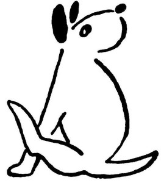
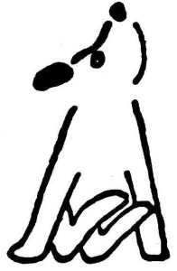

O Foxovi
Když budeš moment držet, Dášeňko, povím ti pohádku o Foxovi.
Foxlík byl sice největším foxteriérem v dějinách, ale nebyl prvním foxteriérem na světě. První foxteriér, kterého Stvořitel stvořil, se jmenoval Fox, a ten Fox byl čistě bílý, bez jediné poskvrnky. Jakpak by nebyl bílý jako družička, vždyť byl stvořen pro ráj, aby si hověl na klíně andělů. Co tam v tom ráji dostával žrát? No, smetanu a syrečky; maso ne, protože andělé jsou vegetariáni. A ten Fox byl hravý a neposedný jako všichni foxteriéři; a když se šel před ráj vyvenčit – fuj, co si myslíš, v ráji přece nemohl dělat loužičky, to se nesluší, vždy v bytě se to také nemá dělat, pamatuj si to a vem si příklad z Foxe, který vždycky zaškrábal na vrata ráje, že se mu jako chce jít ven – počkej, kde jsem to přestal? Aha, jak Fox několikrát denně šel z ráje ven. A tam si z neposednosti hrál s čerty. Nejspíš si myslel, že to jsou nějací pejsci, protože mají ohony, kdežto andělé mají jenom křídla. Jak si s nimi hrál? Honil se s nimi po louce, do chvostů je kousal, po zemi se s nimi kutálel a podobně. A když zase zaštěkal u vrat ráje, aby ho pustili dovnitř, měl na sobě hnědé skvrny od země a černé skvrny, jak se otřel o čerty. Od té doby mají foxteriéři černé a hnědé skvrny, víš?

A jednou řekl Foxovi jeho kamarád čert, takový čertík mrňavý, rarášek, diblík, štěně od čerta: „Ty, Foxi, já bych se chtěl jen na moment podívat, jak to v ráji vypadá. Vem mne tam s sebou!“ „To nejde,“ řekl Fox, „oni tě tam nepustí.“ „Tak víš co,“ řekl čert, „vem mne do tlamičky a prones mne dovnitř. Do huby se ti nikdo dívat nebude.“
Fox si dal z dobroty srdce říci, vzal toho čerta do tlamičky a proklouzl s ním do ráje; a aby to na něm nebylo vidět, vrtěl vesele ocáskem. Ale Stvořiteli, to se rozumí, není nic utajeno. „Děti, děti,“ řekl, „mně se zdá, že tu má někdo čerta v těle.“
„Já ne, já ne,“ křičeli všichni andělé, jen Fox nic neřekl, aby mu čert z huby nevyletěl. Vyhrkl jen „Haf“ a honem zase zavřel hubu.
„Nic naplat, Foxi,“ pravil Stvořitel, „když máš v sobě čerta, nemůžeš sloužit andělům. Jdi na zem a provázej člověka.“
Od té doby, Dášeňko, mají všichni foxteriéři raráška v těle a v tlamičce na patře černý flíček od čerta. Tak je to.
A už můžeš běžet.
